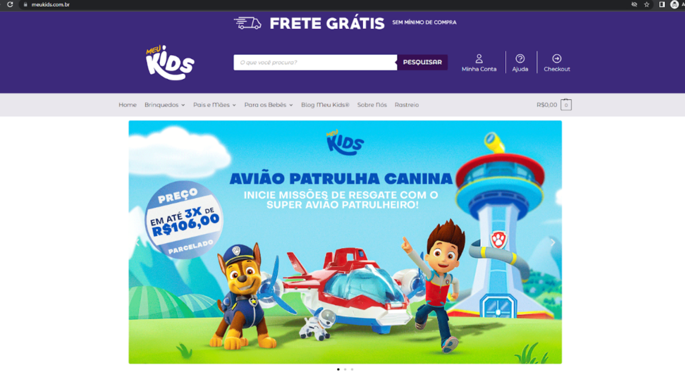
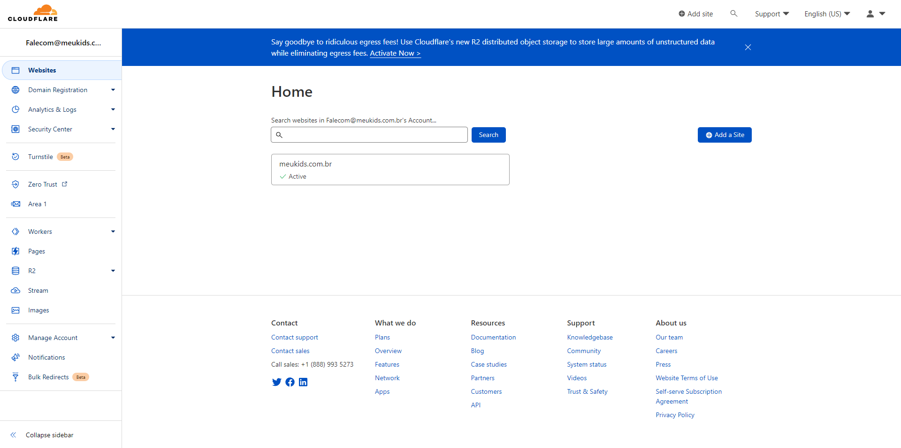

Website Meu Kids
Descrição do Projeto
Esse projeto consiste na criação de um e-commerce hospedado nos servidores da Cloudways e Wordpress, com utilização do Woocommerce. O WordPress funciona como uma plataforma de administração de site. É possível, portanto, publicar conteúdos, criar fóruns, páginas, ter controle de quantas pessoas estão entrando no site, por quais plataformas estão acessando e muitas outras. Dessa maneira, ele funciona como um painel que permite controlar todo o site.
Para a produção desse projeto, também utilizei muito do HTML e CSS em diversos plugins. Eles tinham uma necessidade alta pois me ajudavam a estilizar e editar as páginas do jeito que eu queria, na hora que eu queria, pois no caso do Wordpress, ele possui esse problema de limitação para seus temas e plugins.
Junto com a equipe de Design Gráfico adquiri experiência com figma e photoshop para a criação de banners para utilização no mundo do marketing digital. Pude explorar da criatividade desse mundo de inovação sem fim, ajudando os membros a trazer mais público-alvo para o site e consequentemente, a conversão de pedidos.
A imagem acima apresenta a página da CloudFlare. Trata-se de um servidor em nuvem para infraestrutura de redes com o objetivo de aumentar a segurança e o desempenho de um site. A Meu Kids utilizou desse sistema para criação dessa rede em nuvem e todos os backups de seu e-commerce. Tive o imenso prazer de poder criar os servidores e configurá-los na nuvem. Uma experiência única e gratificante. Agradeço a todos os membros da Meu Kids por essa oportunidade.